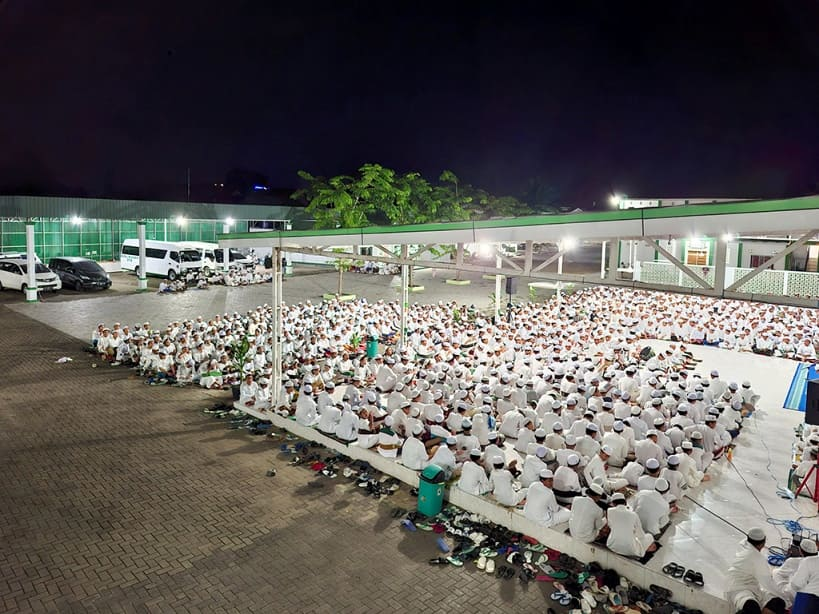
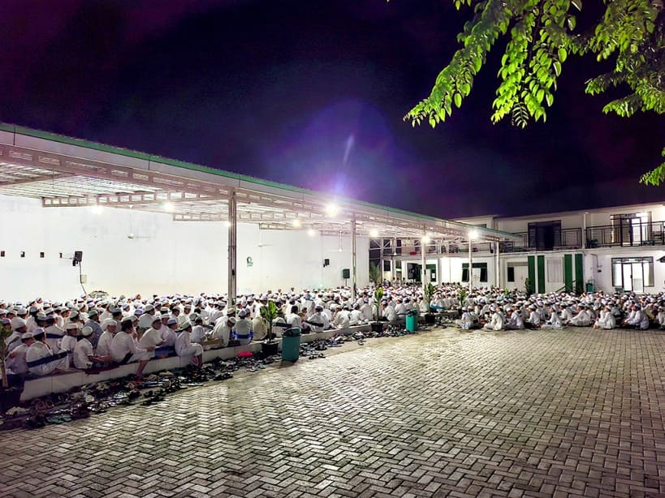
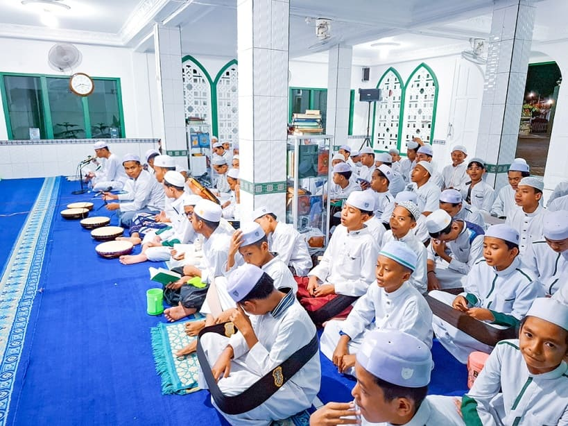

<div id="ajax-page" class="ajax-page-content">
    <div class="ajax-page-wrapper">
        <div class="ajax-page-nav">
            <div class="nav-item ajax-page-prev-next">
                <a class="ajax-page-load" href="Kegiatan-01.html"><i class="lnr lnr-chevron-left"></i></a>
                <a class="ajax-page-load" href="Kegiatan-03.html"><i class="lnr lnr-chevron-right"></i></a>
            </div>
            <div class="nav-item ajax-page-close-button">
                <a id="ajax-page-close-button" href="#"><i class="lnr lnr-cross"></i></a>
            </div>
        </div>

        <div class="ajax-page-title">
            <h1>MAULID MALAM JUM'AT
            <h4>di Pondok Pesantren Nurul Muhibbin Barabai</h4>
        </div>

        <div class="row">
            <div class="col-sm-8 col-md-8 portfolio-block">

                <div class="owl-carousel portfolio-page-carousel">
                    <div class="item">
                        
                        <p>Pembacaan Maulid Habsyi di Pondok Pesantren</p>
                    </div>
                    <div class="item">
                        
                        <p>Pembacaan Maulid Habsyi di Pondok Pesantren</p>
                    </div>
                    <div class="item">
                        
                        <p>Pembacaan Maulid Habsyi di Panti Yatim & Tahfidz</p>
                    </div>
                </div>

                <!--
                <div class="portfolio-page-video embed-responsive embed-responsive-9by16"> -->   <!--embed-responsive-16by9-->
                <!--    <iframe class="embed-responsive-item" src="https://player.vimeo.com/video/97102654?autoplay=0"></iframe>
                
                        <iframe width="342" height="607" src="https://www.youtube.com/embed/mupBIK09hzo?autoplay=1&controls=0&loop=1" title="KH  Muhammad Bakhiet  AM  Barabai  Malam Selasa  18 November 2024" frameborder="0" allow="accelerometer; autoplay; clipboard-write; encrypted-media; gyroscope; picture-in-picture; web-share" referrerpolicy="strict-origin-when-cross-origin" allowfullscreen></iframe>                </div>
                -->

                <script type="text/javascript">
                    jQuery(document).ready(function($){
                        $('.portfolio-page-carousel').imagesLoaded(function(){
                            $('.portfolio-page-carousel').owlCarousel({
                                smartSpeed:1200,
                                items: 1,
                                loop: true,
                                dots: true,
                                nav: true,
                                navText: false,
                                margin: 10,
                                autoHeight:true
                            });
                        });
                    });
                </script>
            </div>

            <div class="col-sm-4 col-md-4 portfolio-block">
                <!-- Project Description -->
                 
                <div class="project-description">
                    <div class="block-title">
                        <h3>Diskripsi</h3>
                    </div>

                   <style>
                        p  {
                            text-align: justify;
                        }
                        ol {
                            margin: 0 18px;
                        }
                        ul {
                            margin: 0 18px;
                        }
                        li {
                            margin-bottom: 5px;
                        }
                        strong {
                            color: #009a4c;
                        }
                    </style>

                    <p>
                        Pada malam Jum'at yang penuh berkah, pondok pesantren menyelenggarakan <strong> kegiatan rutin pembacaan Maulid Nabi Muhammad SAW</strong>. Acara dimulai dengan pembacaan kitab Maulid <em> Syimthudduror</em> karya Habib Ali Al-Habsyi, yang dibacakan dengan penuh khidmat oleh para santri dan ustadz. <br>
                        Dengan lantunan syair-syair penuh pujian kepada Rasulullah, suasana malam menjadi syahdu, mengingatkan semua yang hadir akan akhlak mulia dan perjuangan Nabi Muhammad SAW dalam membawa risalah Islam.
                    </p>
                    <p>
                        Setelah pembacaan Maulid selesai, acara dilanjutkan dengan <strong> tausiyah atau nasehat</strong> yang disampaikan oleh ketua Kantor Keamanan dan Ketertiban pondok pesantren. Dalam kesempatan tersebut, beliau memberikan wejangan penting tentang pentingnya menjaga kedisiplinan, keamanan, dan ketertiban di lingkungan pondok. <br>
                        Pesan-pesan tersebut disampaikan dengan pendekatan yang inspiratif, mengaitkan nilai-nilai yang dicontohkan Nabi Muhammad SAW dalam kehidupan sehari-hari para santri.
                    </p>
                    <p>
                        Kegiatan Maulid ini tidak hanya menjadi momen spiritual yang memperkuat kecintaan kepada Rasulullah, tetapi juga menjadi ajang untuk mempererat hubungan antara santri, ustadz, dan pengurus pondok. <br>
                        Dengan adanya nasehat dari ketua keamanan dan ketertiban, para santri diharapkan semakin sadar akan pentingnya menjaga harmoni, baik secara spiritual maupun sosial, dalam lingkungan pesantren.
                    </p>

                    <!--<p class="text-justify">Aliquam euismod aliquam massa, quis eleifend dui sodales vitae. Interdum et malesuada fames ac ante ipsum primis in faucibus.</p> -->
                    <!-- /Project Description -->

                    <!-- Technology -->
                     <!--
                    <div class="tags-block">
                        <div class="block-title">
                            <h3>Technology</h3>
                        </div>
                        <ul class="tags">
                            <li><a>HTML5</a></li>
                            <li><a>CSS3</a></li>
                            <li><a>jQuery</a></li>
                            <li><a>Ajax</a></li>
                            <li><a>PHP5</a></li>
                        </ul>
                    </div>
                    -->
                    <!-- /Technology -->

                    <!-- Share Buttons -->
                    <div class="share-buttons">
                        <div class="block-title">
                            <h3>Bagikan</h3>
                        </div>
                        <div class="share-buttons-group">
                            <a href="https://www.facebook.com/share.php?u=psbnmb.ct.ws" target="_blank" class="btn"><i class="fab fa-facebook-f"></i> </a>
                            <a href="#" target="_blank" class="btn"><i class="fab fa-twitter"></i> </a>
                            <a href="#" target="_blank" class="btn"><i class="fab fa-dribbble"></i> </a>
                        </div>
                    </div>
                    <!-- /Share Buttons -->
                </div>
                <!-- Project Description -->
            </div>
        </div>
    </div>
</div>
